Streamflow Eval :: StdSuite Analysis#

Essential Benchmark Components#
This benchmark notebook will present a workflow which follows a canonical model for Essential Benchmark Components:
A set of predictions and matching observation (the data);
The domain (e.g. space or time) over which to benchmark;
A set of statistical metrics with which to benchmark.
Let’s get started.
Step 0: Load libraries and configure Python computing environment#
import pandas as pd
import logging
import os
# Needed when boto3 >= 1.36.0 or the rechunking process will fail
# This needs to be set before the boto3 library gets loaded
# See: https://github.com/aws/aws-cli/issues/9214#issuecomment-2606619168
os.environ['AWS_REQUEST_CHECKSUM_CALCULATION'] = 'when_required'
os.environ['AWS_RESPONSE_CHECKSUM_VALIDATION'] = 'when_required'
Step 1: Load Data#

Essential Benchmark Components:
A set of predictions and matching observations
The domain over which to benchmark
A set of statistical metrics with which to benchmark.
Finding and loading data is made easier for this particular workflow (the streamflow variable), in that most of it has been pre-processed and stored in a cloud-friendly format. That process is described in the data preparation notebook. We will proceed here using the already-prepared data for streamflow, which is included in the HyTEST intake catalog.
import intake
cat = intake.open_catalog(r'https://raw.githubusercontent.com/hytest-org/hytest/main/dataset_catalog/hytest_intake_catalog.yml')
print("Available datasets: \n", "\n".join(cat.keys()))
Available datasets:
conus404-catalog
benchmarks-catalog
conus404-drb-eval-tutorial-catalog
nhm-v1.0-daymet-catalog
nhm-v1.1-c404-bc-catalog
nhm-v1.1-gridmet-catalog
trends-and-drivers-catalog
nhm-prms-v1.1-gridmet-format-testing-catalog
nwis-streamflow-usgs-gages-onprem
nwis-streamflow-usgs-gages-osn
nwm21-streamflow-usgs-gages-onprem
nwm21-streamflow-usgs-gages-osn
nwm21-streamflow-s3
geofabric_v1_1-zip-osn
geofabric_v1_1_POIs_v1_1-osn
geofabric_v1_1_TBtoGFv1_POIs-osn
geofabric_v1_1_nhru_v1_1-osn
geofabric_v1_1_nhru_v1_1_simp-osn
geofabric_v1_1_nsegment_v1_1-osn
gages2_nndar-osn
wbd-zip-osn
huc12-geoparquet-osn
huc12-gpkg-osn
nwm21-scores
lcmap-s3
rechunking-tutorial-osn
pointsample-tutorial-sites-osn
pointsample-tutorial-output-osn
The above list represents the processed datasets available for benchmarking. If a dataset you want is not in that list, you can load the data manually via direct connection to ‘on-prem’ or S3 object storage. If you load data from a source other than this list, you can jump to Step 2: Restrict to a Domain
Note that the interesting datasets in the cataloged dataset above are duplicated: Some are -onprem
and some are -cloud. Same data, but the storage location and access protocol will be different. You
will definitely want to use the correct copy of the data for your computing environment.
onprem: Direct access via thecalderafilesystem from denali or tallgrasscloud: Network access via S3 bucket, suitable for consumption on cloud-hosted jupyter servers. You could also access using any network-attached computer, but the amount of data will likely saturate your connection. Use in the cloud (e.g. ESIP QHub)osn: Network access via OSN pod, which uses the S3 API, suitable for consumption on any jupyter server.
So… are you on-prem?
import platform
onprem = (platform.node() in ['denali', 'tallgrass']) # NOTE: these hostnames are not quite correct... this will always return not onprem.
if onprem:
print("Yes : -onprem")
obs_data_src='nwis-streamflow-usgs-gages-onprem'
mod_data_src='nwm21-streamflow-usgs-gages-onprem'
else:
print("Not onprem; use '-osn' data source")
obs_data_src='nwis-streamflow-usgs-gages-osn'
mod_data_src='nwm21-streamflow-usgs-gages-osn'
print("Observed : ", obs_data_src)
print("Modeled : ", mod_data_src)
Not onprem; use '-osn' data source
Observed : nwis-streamflow-usgs-gages-osn
Modeled : nwm21-streamflow-usgs-gages-osn
variable_of_interest = 'streamflow'
try:
obs = cat[obs_data_src].to_dask()
mod = cat[mod_data_src].to_dask()
except KeyError:
print("Something wrong with dataset names.")
raise
try:
obs_data = obs[variable_of_interest]
mod_data = mod[variable_of_interest].astype('float32')
except KeyError:
print(f"{variable_of_interest} was not found in these data.")
obs_data.name = 'observed'
mod_data.name = 'predicted'
Step 2: Restrict to a Domain#
{kind=link}
Essential Benchmark Components:
A set of predictions and matching observations,
The domain over which to benchmark
A set of statistical metrics with which to benchmark.
Each benchmark domain is defined over specific bounds (typically space and/or time). Benchmark domain definitions can be defined within the notebook, or sourced from elsewhere. For this example, we use the Cobalt gages, avaliable for download on ScienceBase (Foks et al., 2022).
This is essentially a list of stream guages in which we are interested, along with some metadata about that gage (watershed, reach code, etc). We will use this as a spatial selector to restrict the original data to only those gages found within this benchmarking domain.
cobalt = pd.read_csv(
'https://www.sciencebase.gov/catalog/file/get/6181ac65d34e9f2789e44897?f=__disk__22%2F1a%2Fd2%2F221ad2fe9d95de17731ad35d0fc6b417a4b53ee1',
dtype={'site_no':str, 'huc_cd':str, 'reachcode':str, 'comid':str, 'gagesII_class':str, 'aggecoregion': str},
index_col='site_no'
)
# Re-format the gage_id/site_no string value. ex: "1000000" ==> "USGS-1000000"
cobalt.rename(index=lambda x: f'USGS-{x}', inplace=True)
print(f"{len(cobalt.index)} gages in this benchmark")
cobalt.head(2)
5390 gages in this benchmark
| dec_lat_va | dec_long_va | comid | reachcode | reach_meas | drain_sqkm | huc02 | gagesII_class | aggecoregion | complete_yrs | n_days | nldi | swim | gfv1d1 | camels | |
|---|---|---|---|---|---|---|---|---|---|---|---|---|---|---|---|
| site_no | |||||||||||||||
| USGS-01011000 | 47.069722 | -69.079444 | 721640 | 01010002000001 | 53.747189 | 3186.8 | 01 | Non-ref | NorthEast | 33 | 12146 | 1 | 1 | 1 | 0 |
| USGS-01013500 | 47.237500 | -68.582778 | 724696 | 01010003000003 | 7.660419 | 2252.7 | 01 | Ref | NorthEast | 33 | 12146 | 1 | 1 | 1 | 1 |
So now we have a domain dataset representing the stream gages (unique site_no values) identifying the locations making up the spatial domain of this benchmark. While we have good meta-data for these gages (lat/lon location, HUC8 code, etc), we really will only use the list of site_no values to select locations out of the raw data.
Step 3: Define Metrics#

Essential Benchmark Components:
A set of predictions and matching observations,
The domain over which to benchmark
A set of statistical metrics with which to benchmark.
The code to calculate the various NWM metrics has been standardized in Standard Suite (v1) Metrics with usage examples in Standard Suite (v1) Metrics – Usage Examples. You can use these metrics or write your own. To import and use these standardized definitions, run this cell:
%run ../../Metrics_StdSuite_v1.ipynb
Whether you use these functions or your own, we need to put all metric computation into a special all-encompasing
benchmarking function–a single call which can be assigned to each gage in our domain list. This sort of arrangement
is well-suited to parallelism with dask.
If this is done well, the process will benefit enormously from task parallelism – each gage can be given its own CPU to run on. After all are done, the various results will be collected and assembled into a composite dataset.
To achieve this, we need a single ‘atomic’ function that can execute independently. It will take the gage identifier as input and return a list of metrics.
## Wrapper function -- this func will be called once per gage_id, each call on its own dask worker
def compute_benchmark(gage_id):
try:
## obs_data and mod_data should be globals...
obs = obs_data.sel(gage_id=gage_id).load(scheduler='single-threaded').to_series()
mod = mod_data.sel(gage_id=gage_id).load(scheduler='single-threaded').to_series().resample('1D', offset='5h').mean()
# make sure the indices match
obs.index = obs.index.to_period('D')
mod.index = mod.index.to_period('D')
# merge obs and predictions; drop NaNs.
gage_df = pd.merge(obs, mod, left_index=True, right_index=True).dropna(how='any')
scores = pd.Series(
data={
'NSE': NSE(gage_df.observed, gage_df.predicted),
'KGE': KGE(gage_df.observed, gage_df.predicted),
'logNSE': logNSE(gage_df.observed, gage_df.predicted),
'pbias': pbias(gage_df.observed, gage_df.predicted),
'rSD': rSD(gage_df.observed, gage_df.predicted),
'pearson': pearson_r(gage_df.observed, gage_df.predicted),
'spearman': spearman_r(gage_df.observed, gage_df.predicted),
'pBiasFMS': pBiasFMS(gage_df.observed, gage_df.predicted),
'pBiasFLV': pBiasFLV(gage_df.observed, gage_df.predicted),
'pBiasFHV': pBiasFHV(gage_df.observed, gage_df.predicted)
},
name=gage_id,
dtype='float64'
)
return scores
except Exception as e:#<-- this is an extremely broad way to catch exceptions. We only do it this way to ensure
# that a failure on one benchmark (for a single stream gage) will not halt the entire run.
logging.info("Benchmark failed for %s", gage_id)
return None
Let’s test to be sure this compute_benchmark() function will return data for a single gage
compute_benchmark('USGS-01030350')
NSE 0.610187
KGE 0.581806
logNSE 0.437532
pbias -12.679162
rSD 0.655655
pearson 0.799410
spearman 0.859123
pBiasFMS -34.154374
pBiasFLV 90.474846
pBiasFHV -43.865921
Name: USGS-01030350, dtype: float64
Execute the Analysis#
We will be doing a lot of work in parallel, using workers within a ‘cluster’.
The details of cluster configuration are handled for us by ‘helper’ notebooks, below.
You can override their function by doing your own cluster configuration if you like.
# uncomment the lines below to read in your AWS credentials if you want to access data from a requester-pays bucket (-cloud)
# os.environ['AWS_PROFILE'] = 'default'
# %run ../../../environment_set_up/Help_AWS_Credentials.ipynb
%run ../../../environment_set_up/Start_Dask_Cluster_Nebari.ipynb
### Executes external 'helper to spin up a cluster of workers.
The 'cluster' object can be used to adjust cluster behavior. i.e. 'cluster.adapt(minimum=10)'
The 'client' object can be used to directly interact with the cluster. i.e. 'client.submit(func)'
The link to view the client dashboard is:
> https://nebari.chs.usgs.gov/gateway/clusters/nebari.e9751cf13922402480fd78f4870fbfd6/status
We verified above that the compute_benchmark works on the “hosted” server (where this
notebook is being executed. As a sanity check before we give the cluster of workers a lot
to do, let’s verify that we can have a remote worker process a gage by submitting work
to one in isolation:
client.submit(compute_benchmark, 'USGS-01030350').result()
NSE 0.610187
KGE 0.581806
logNSE 0.437532
pbias -12.679162
rSD 0.655655
pearson 0.799410
spearman 0.859123
pBiasFMS -34.154374
pBiasFLV 90.474846
pBiasFHV -43.865921
Name: USGS-01030350, dtype: float64
Now that we’ve got a benchmark function, and can prove that it works in remote workers
within the cluster, we can dispatch a fleet of workers to process our data in parallel.
We will make use of dask to do this using a dask ‘bag’.
# Set up a dask bag with the contents beging a list of the cobalt gages
import dask.bag as db
bag = db.from_sequence( cobalt.index.tolist() ).map(compute_benchmark)
results = bag.compute() #<< Dispatch the workers
With that big task done, we don’t need dask parallelism any more. Let’s shut down the cluster:
client.close(); del client
cluster.close(); del cluster
Assemble the results#
The bag now contains a collection of return values (one per call to compute_benchmark()). We can massage that into a table/dataframe for easier processing:
r = [i for i in results if i is not None] # Drop entries where compute_benchmark failed
results_df = pd.concat(r, axis=1).T
results_df.index.name = 'site_no'
results_df
| NSE | KGE | logNSE | pbias | rSD | pearson | spearman | pBiasFMS | pBiasFLV | pBiasFHV | |
|---|---|---|---|---|---|---|---|---|---|---|
| site_no | ||||||||||
| USGS-01011000 | 0.689087 | 0.662586 | 0.597192 | -19.883493 | 0.774751 | 0.846457 | 0.818826 | 14.807267 | 61.287968 | -36.838684 |
| USGS-01013500 | 0.620606 | 0.480716 | 0.752852 | -22.970419 | 0.552287 | 0.871763 | 0.873238 | -14.653922 | 60.804260 | -51.751720 |
| USGS-01015800 | 0.695681 | 0.661854 | 0.764120 | -13.975070 | 0.732493 | 0.847514 | 0.862823 | -5.586978 | 43.496277 | -40.215324 |
| USGS-01017000 | 0.676275 | 0.662182 | 0.728323 | -13.596089 | 0.739596 | 0.833192 | 0.836719 | -2.559546 | 50.629818 | -40.769272 |
| USGS-01017550 | -0.007026 | 0.488803 | 0.187780 | 25.384880 | 1.159282 | 0.585860 | 0.778949 | 20.736102 | 15.696817 | -33.564583 |
| ... | ... | ... | ... | ... | ... | ... | ... | ... | ... | ... |
| USGS-14369500 | 0.576250 | 0.614541 | 0.538312 | 21.251122 | 1.297323 | 0.877457 | 0.771774 | 43.800611 | 112.890411 | 13.504784 |
| USGS-14372300 | 0.747763 | 0.854819 | 0.462287 | 5.255766 | 0.960921 | 0.870431 | 0.889055 | 48.189721 | -26.875940 | -18.711449 |
| USGS-14375100 | -1.256398 | -0.270989 | -0.519090 | 96.341797 | 1.701510 | 0.558273 | 0.330280 | 6.331031 | 735.452148 | 8.474573 |
| USGS-14377100 | 0.751599 | 0.691753 | 0.905647 | 14.723495 | 1.262068 | 0.931750 | 0.955249 | -4.176341 | 22.406696 | 19.312101 |
| USGS-14400000 | 0.840576 | 0.750943 | 0.904838 | -16.752493 | 0.830591 | 0.927435 | 0.957442 | -19.263245 | 2.374946 | -23.003937 |
5380 rows × 10 columns
This dataframe/table can be saved to disk as a CSV. It will be used for visualizations in other notebooks.
results_df.to_csv('NWM_v2.1_streamflow_example.csv') ##<--- change this to a personalized filename